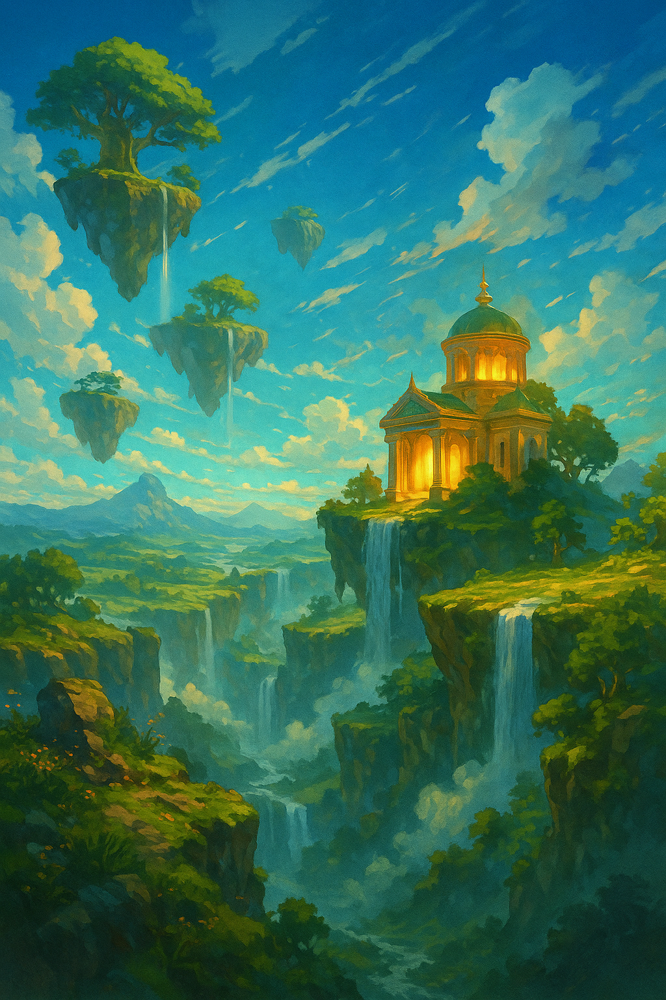
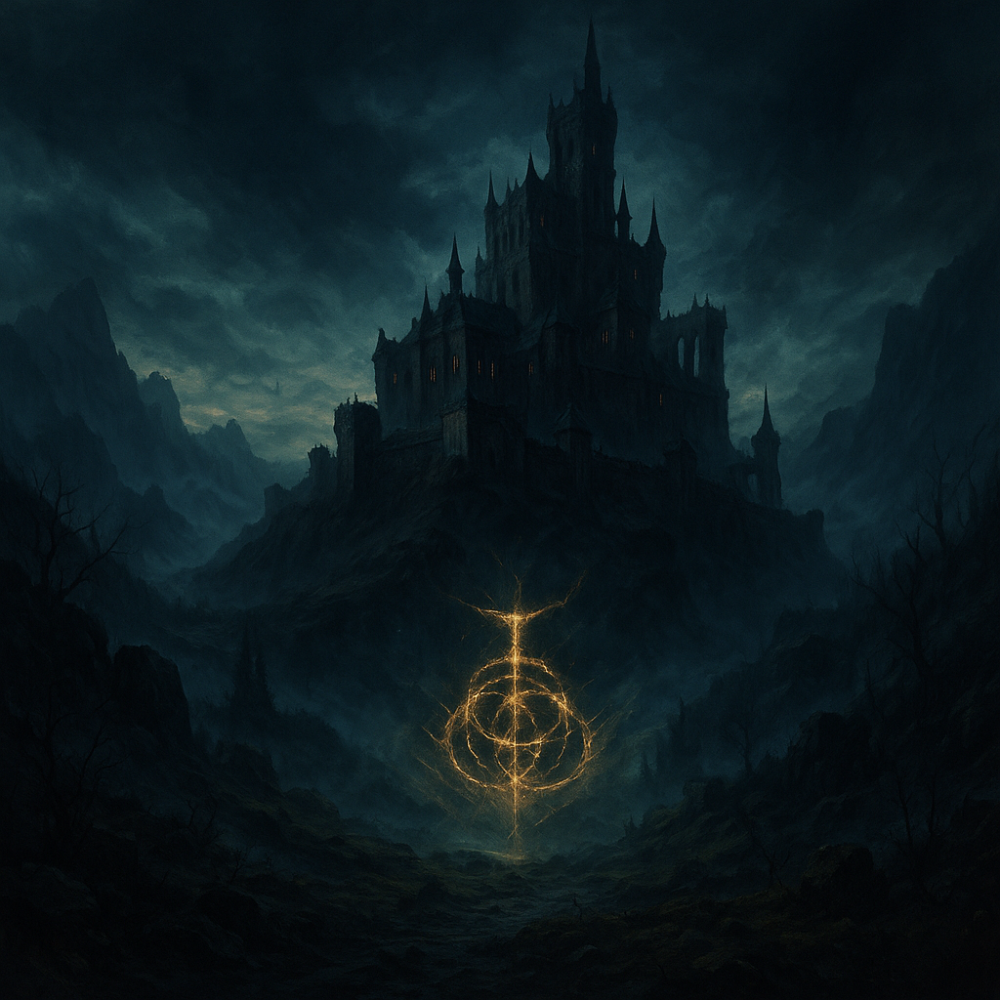
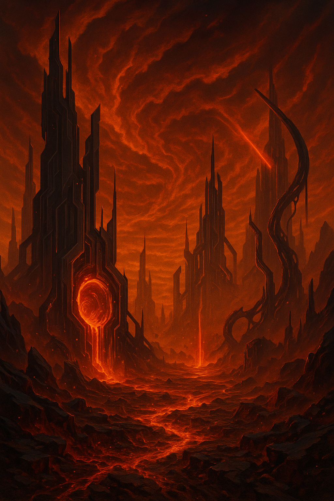
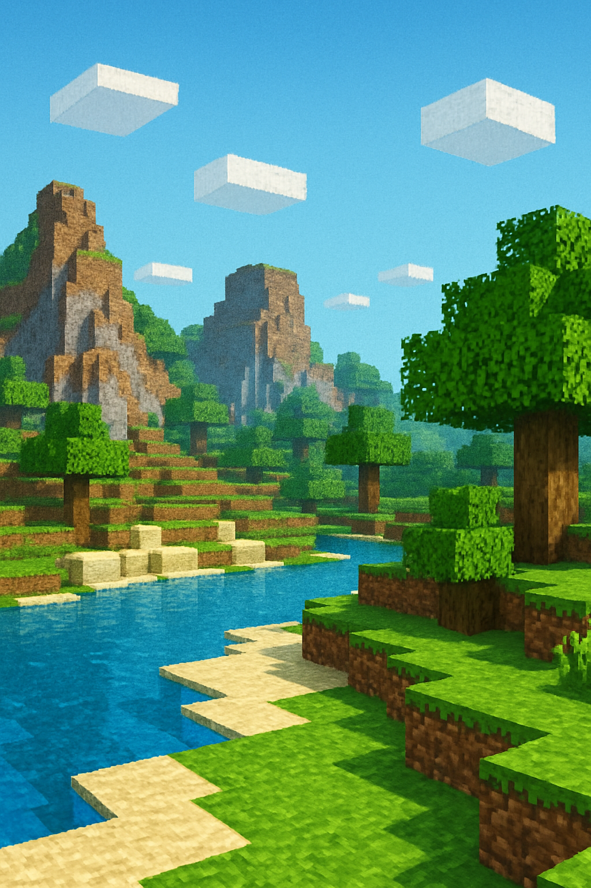
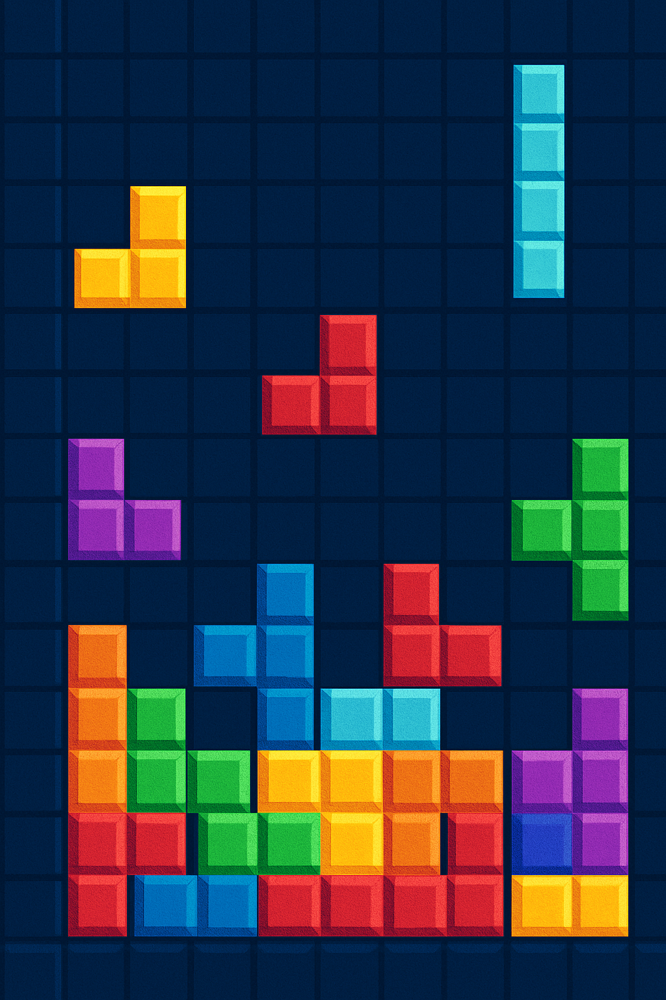
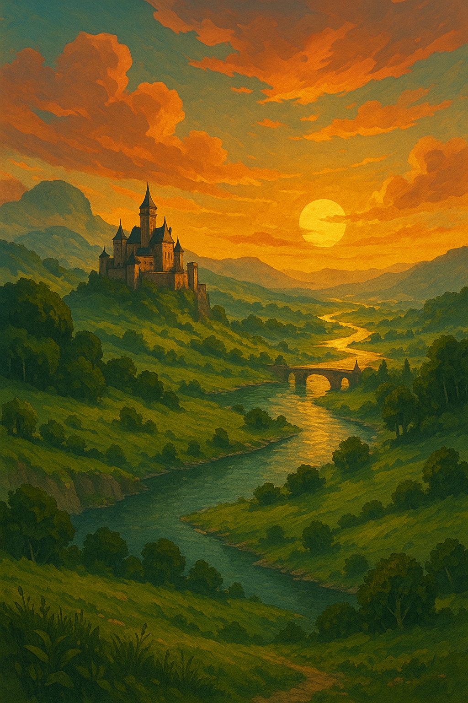
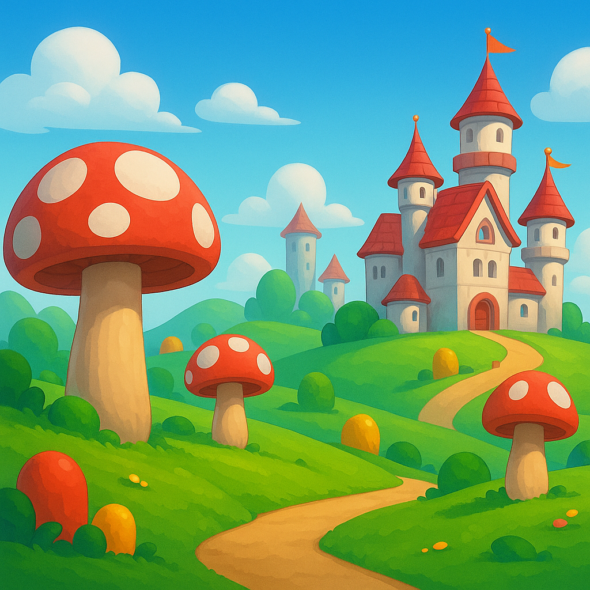
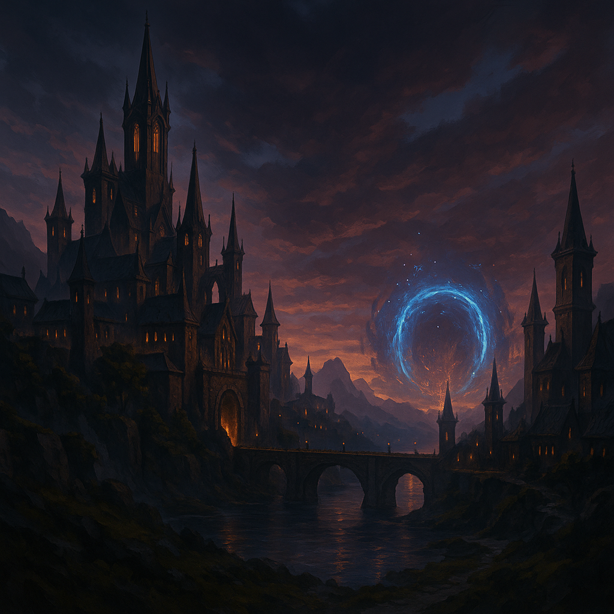

| The Legend of Zelda: Tears of the Kingdom |
2023-05-12 |
Action-adventure |
Nintendo Switch |
Nintendo EPD, Monolith Soft |
Nintendo |
Sequel to Breath of the Wild in which players explore the open world
of Hyrule and new floating islands, solve puzzles and use free
movement abilities to save the kingdom. The game is developed by
Nintendo EPD and Monolith Soft and published by Nintendo.
|

|
| Elden Ring |
2022-02-25 |
Action RPG |
PlayStation 5, PlayStation 4, Xbox Series X|S, Xbox One, Windows (Steam)
|
FromSoftware |
FromSoftware, Bandai Namco Entertainment |
An action role-playing game developed by FromSoftware with worldbuilding
contributions from writer George R. R. Martin. It features an open
world called the Lands Between with challenging combat and deep lore.
It was first released on 25 February 2022 for PlayStation 5/4,
Xbox Series X|S, Xbox One and Windows; it is published worldwide by
Bandai Namco Entertainment and in Japan by FromSoftware.
|

|
| DOOM Eternal |
2020-03-20 |
First-person action |
Windows, PlayStation 4, Xbox One, Stadia, Nintendo Switch,
PlayStation 5, Xbox Series X|S
|
id Software |
Bethesda Softworks |
A fast-paced first-person shooter and direct sequel to DOOM (2016).
Developed by id Software and published by Bethesda Softworks, it
launched on 20 March 2020 for Windows, Xbox One, PlayStation 4 and
Stadia, later arriving on Nintendo Switch in December 2020 and on
next-generation consoles in 2021.
|

|
| Minecraft |
2011-11-18 |
Sandbox / Survival |
Windows, macOS, Linux, Xbox, PlayStation, Nintendo Switch, mobile devices
|
Mojang Studios |
Mojang Studios |
A sandbox game with survival elements, originally created by
Markus Persson and later developed by Mojang Studios. The official
version was released on 18 November 2011 after an alpha period
starting in 2009. Players can freely explore and build in a
procedurally generated blocky world, gather resources, craft items
and try to survive. It is both developed and published by Mojang
Studios and is the best-selling video game in history.
|

|
| Tetris |
1984-06-06 |
Puzzle |
Elektronika 60, IBM PC, Amiga, Atari ST, Apple II, NES, Game Boy
and many others
|
Alexey Pajitnov, Vadim Gerasimov |
The Tetris Company |
A classic puzzle game created by Alexey Pajitnov in the Soviet Union,
with the MS-DOS version programmed by Vadim Gerasimov. Colored
tetromino blocks fall from the top and players rotate and position
them to form complete lines. First released on 6 June 1984, it has
appeared on numerous platforms and is considered one of the most
influential puzzle games of all time.
|

|
| The Witcher 3: Wild Hunt |
2015-05-19 |
Action RPG |
Windows, PlayStation 4, Xbox One, Nintendo Switch,
PlayStation 5, Xbox Series X|S
|
CD Projekt RED |
CD Projekt |
An open-world action role-playing game developed by CD Projekt RED.
Players control Geralt of Rivia, a monster hunter searching for his
adopted daughter who is pursued by the spectral Wild Hunt. The game
launched on 19 May 2015, came to Nintendo Switch in October 2019
and received next-generation versions in December 2022. It is
published by CD Projekt.
|

|
| Super Mario Odyssey |
2017-10-27 |
Platformer |
Nintendo Switch |
Nintendo EPD, 1-Up Studio |
Nintendo |
A 3D platformer developed by Nintendo EPD Tokyo and 1-Up Studio and
published by Nintendo. Mario travels across many kingdoms with his
new friend, the sentient hat Cappy, collecting Power Moons to fuel
the airship Odyssey. The game was released on 27 October 2017 and
later in additional Asian regions.
|

|
| Baldur’s Gate 3 |
2023-08-03 |
Role-playing |
Windows, PlayStation 5, macOS, Xbox Series X|S, Linux
|
Larian Studios |
Larian Studios |
A role-playing game based on the Dungeons & Dragons ruleset,
developed and published by Larian Studios. Players explore the world
of the Forgotten Realms, create characters and make story-defining
choices. The full Windows version released on 3 August 2023,
followed by PlayStation 5 in September 2023, macOS in September
2023, Xbox Series X|S in December 2023 and a planned Linux version
in 2025.
|

|